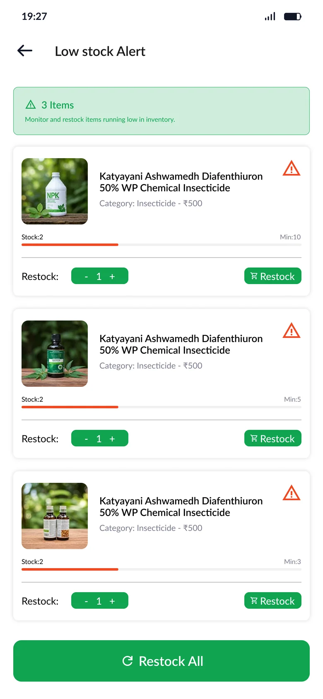
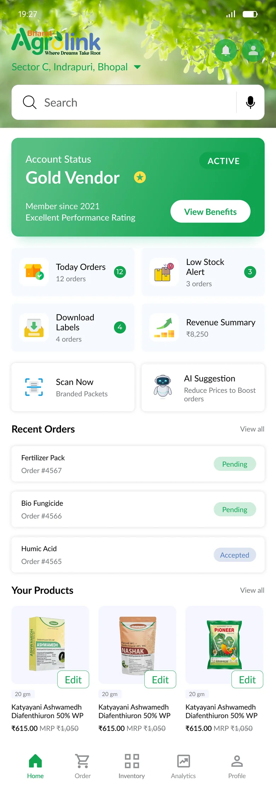
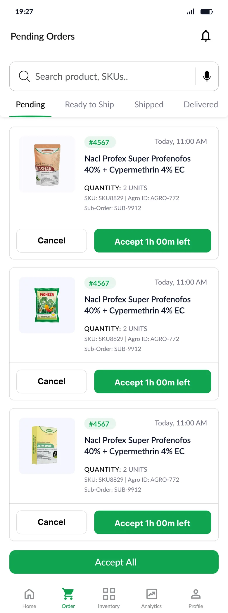

↗
Connect signal to action
Low stock leads to restocking. An order state leads to fulfillment. A return request leads to a documented choice.
A mobile vendor experience that brings store setup, inventory, orders, returns, and earnings into one coherent journey.
Explore the case study ↘


A marketplace depends on sellers doing many small, consequential things well: creating accurate listings, keeping stock current, shipping on time, and understanding what they earned.
The existing AgroArth marketplace ↗ gives context for the shopper side. This Vendor App design explores the operational side: a place where a seller can see what needs attention and move into the right task without losing context.
This is a retrospective assessment of the supplied Figma file and exports. The shopper site is context, not a like-for-like vendor-app baseline.
How might a vendor know what needs attention now, act with confidence, and still reach deeper store tools when needed?
Reviewing the 11 workflow groups revealed one organizing idea: information becomes useful when the next action is close to it.
Low stock leads to restocking. An order state leads to fulfillment. A return request leads to a documented choice.
Summaries stay on the home screen; forms, payout breakdowns, and policy detail live inside the related task.
OTP errors, empty catalogs, missing stock, cancellations, late shipping, and returns have explicit states.
These are observations from the design review, not validated research findings or a claim about the original team’s process.
The design covers onboarding, catalog and inventory, order fulfillment, exceptions, performance, and growth. These are selected screens from the supplied exports. The phone previews are cropped for layout; select a screen to inspect its full frame.
Login, OTP, language selection, and vendor type lead into four named registration stages: Personal Details, Pickup Address, Bank Details, and Supplier Details. Each step gives a long task a narrower focus.
Staged forms and explicit verification states make progress visible.
Account status, today’s orders, low-stock alerts, label downloads, and revenue sit near the top. Recent orders and products add context.
The same signal-to-action relationship continues throughout the app.
Product cards expose identity, price, SKU, remaining units, and three stock states: Active, Low Stock, and Out of Stock. The listing journey offers manual and AI-assisted upload concepts; another concept explores PDF catalog import.
Show stock health in the list, then let sellers choose a listing route based on the material they have.
AI extraction and PDF import are design concepts; their implementation and accuracy were not verified.
The primary journey uses five states: Pending, Ready to Ship, Shipped, Delivered, and Canceled. A repeated order-card structure keeps product and order identity familiar while actions change with state.
Bulk acceptance, tracking, and cancellation reasons appear in the wider flow.
Returns, cancellation, and delays have dedicated screens. A return request shows a reason, product, evidence, and journey before the vendor decides. Rejection reasons and a refund summary clarify consequences.
Treat exception states as complete journeys with context at the moment of decision.
One sample return reason refers to torn clothing beside an insecticide product. That content mismatch needs correction before implementation.
Analytics spans revenue, order status, product performance, and stock alerts. Wallet screens add transaction history and a sale-level breakdown. Campaign setup introduces budget and schedule choices.
Keep performance signals close to operational actions, moving from “what happened” to “what now.”
Amounts and charts inside the mockups are sample content, not measured business results.
The flows connect many vendor jobs, but several sample states need refinement before handoff.
The manual form uses rupee examples under quantity fields. Use unit-based examples and distinct validation.
A return reason about clothing appears beside an insecticide. Review sample content screen by screen.
Analytics status counts do not add to the displayed total; wallet figures mix mismatched sale amounts.
A daily budget can have no end date or total-spend preview. Show commitment before confirmation.
The design spans 11 Figma workflow groups and 98 supplied per-screen exports, covering the main journey and important exceptions. Those numbers describe design coverage, not usage or business impact.
No vendor usability scores, task times, conversion, retention, or revenue changes were supplied. Next, I would fix content and data issues, then test six critical tasks with representative vendors: complete setup, list a product, restock, fulfill an order, resolve a return, and locate a transaction.
View the full Figma design ↗Selected screens from the supplied 4× exports. Select any screen to inspect it at a larger size.
View exact source PNG filenames for every displayed screen ↗